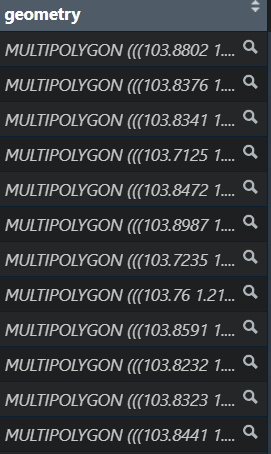
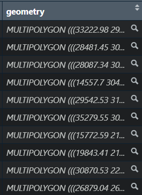

Show the code
pacman::p_load(tidyverse,sf,
tmap,ggstatsplot)This code chunk install and load the relevant package.
pacman::p_load(tidyverse,sf,
tmap,ggstatsplot)This code chunk imports shapefile(.shp):
mpsz14_shp = st_read(dsn = "data/",
layer = "MP14_SUBZONE_WEB_PL")Reading layer `MP14_SUBZONE_WEB_PL' from data source
`C:\rydialiang\isss626-aug24\In-class Exercise\In-class_Ex01\data'
using driver `ESRI Shapefile'
Simple feature collection with 323 features and 15 fields
Geometry type: MULTIPOLYGON
Dimension: XY
Bounding box: xmin: 2667.538 ymin: 15748.72 xmax: 56396.44 ymax: 50256.33
Projected CRS: SVY21This code chunk imports kml file(.kml):
st_write(mpsz14_shp,
"data/MP14_SUBZONE_WEB_PL.kml",
delete_dsn = TRUE)Deleting source `data/MP14_SUBZONE_WEB_PL.kml' using driver `KML'
Writing layer `MP14_SUBZONE_WEB_PL' to data source
`data/MP14_SUBZONE_WEB_PL.kml' using driver `KML'
Writing 323 features with 15 fields and geometry type Multi Polygon.This code chunk imports kml file.
preschool_kml <- st_read("data/PreSchoolsLocation.kml")Reading layer `PRESCHOOLS_LOCATION' from data source
`C:\rydialiang\isss626-aug24\In-class Exercise\In-class_Ex01\data\PreSchoolsLocation.kml'
using driver `KML'
Simple feature collection with 2290 features and 2 fields
Geometry type: POINT
Dimension: XYZ
Bounding box: xmin: 103.6878 ymin: 1.247759 xmax: 103.9897 ymax: 1.462134
z_range: zmin: 0 zmax: 0
Geodetic CRS: WGS 84This code chunk imports geojson file.
preschool_geojson <- st_read("data/PreSchoolsLocation.geojson") Reading layer `PreSchoolsLocation' from data source
`C:\rydialiang\isss626-aug24\In-class Exercise\In-class_Ex01\data\PreSchoolsLocation.geojson'
using driver `GeoJSON'
Simple feature collection with 2290 features and 2 fields
Geometry type: POINT
Dimension: XYZ
Bounding box: xmin: 103.6878 ymin: 1.247759 xmax: 103.9897 ymax: 1.462134
z_range: zmin: 0 zmax: 0
Geodetic CRS: WGS 84This code chunk import shapefile.
mpsz19_shp <- st_read(dsn = "data/",
layer = "MPSZ-2019")Reading layer `MPSZ-2019' from data source
`C:\rydialiang\isss626-aug24\In-class Exercise\In-class_Ex01\data'
using driver `ESRI Shapefile'
Simple feature collection with 332 features and 6 fields
Geometry type: MULTIPOLYGON
Dimension: XY
Bounding box: xmin: 103.6057 ymin: 1.158699 xmax: 104.0885 ymax: 1.470775
Geodetic CRS: WGS 84This code chunk import kml file:
mpsz19_kml <- st_read("data/MasterPlan2019SubzoneBoundaryNoSeaKML.kml")Reading layer `URA_MP19_SUBZONE_NO_SEA_PL' from data source
`C:\rydialiang\isss626-aug24\In-class Exercise\In-class_Ex01\data\MasterPlan2019SubzoneBoundaryNoSeaKML.kml'
using driver `KML'
Simple feature collection with 332 features and 2 fields
Geometry type: MULTIPOLYGON
Dimension: XY, XYZ
Bounding box: xmin: 103.6057 ymin: 1.158699 xmax: 104.0885 ymax: 1.470775
z_range: zmin: 0 zmax: 0
Geodetic CRS: WGS 84st_crs(mpsz19_shp)Coordinate Reference System:
User input: WGS 84
wkt:
GEOGCRS["WGS 84",
DATUM["World Geodetic System 1984",
ELLIPSOID["WGS 84",6378137,298.257223563,
LENGTHUNIT["metre",1]]],
PRIMEM["Greenwich",0,
ANGLEUNIT["degree",0.0174532925199433]],
CS[ellipsoidal,2],
AXIS["latitude",north,
ORDER[1],
ANGLEUNIT["degree",0.0174532925199433]],
AXIS["longitude",east,
ORDER[2],
ANGLEUNIT["degree",0.0174532925199433]],
ID["EPSG",4326]]Note that the EPSG code is 4326 for WGS84.
We may need to perform transformation to change the EPSG code accordingly if we notice that the EPSG code does not corresponding to the CRS.
The correct EPSG code for svy21 should be 3414.
Import and transform coordinate system for the shapefile:
mpsz19_shp <- st_read(dsn = "data/",
layer = "MPSZ-2019") %>%
st_transform(crs = 3414)Reading layer `MPSZ-2019' from data source
`C:\rydialiang\isss626-aug24\In-class Exercise\In-class_Ex01\data'
using driver `ESRI Shapefile'
Simple feature collection with 332 features and 6 fields
Geometry type: MULTIPOLYGON
Dimension: XY
Bounding box: xmin: 103.6057 ymin: 1.158699 xmax: 104.0885 ymax: 1.470775
Geodetic CRS: WGS 84GCS define locations on the earth using a three-dimensional spherical surface. For example, WGS84.
They provides accuracy position information. Unit of measurement will be in either decimal degree or degree-minute-second format.
GCS, however, are not appropriate for distance and area measurements. In this figure, it is clear that 1 degree distance at the north pole is relatively shorter than 1 degree at the equator.
Refer to 9.1 Geographic Coordinate Systems to learn more about GCS.
Based on a map projection such as transverse Mercator, Albers equal area, or Robinson.
PCS provides consistent length and area measurement across space. Hence, it is important to transform a geospatial data from GCS to PCS before performing geospatial analysis.
Refer to 9.2 Projected Coordinate Systems to learn more about GCS.
technical term: re-projection
mpsz19_shp geometry changed.
Before:

After:

Import and transform kml file:
preschool <- st_read("data/PreSchoolsLocation.kml") %>%
st_transform(crs = 3414)Reading layer `PRESCHOOLS_LOCATION' from data source
`C:\rydialiang\isss626-aug24\In-class Exercise\In-class_Ex01\data\PreSchoolsLocation.kml'
using driver `KML'
Simple feature collection with 2290 features and 2 fields
Geometry type: POINT
Dimension: XYZ
Bounding box: xmin: 103.6878 ymin: 1.247759 xmax: 103.9897 ymax: 1.462134
z_range: zmin: 0 zmax: 0
Geodetic CRS: WGS 84We may prefer to work with csv file as it is tidier. Excel file may contain headers and merged cell, which may result in requirement for data cleaning.
The code chunk below count the number of pre-schools in each planning sub-zone.
mpsz19_shp <- mpsz19_shp %>%
mutate(`PreSch Count` = lengths(
st_intersects(mpsz19_shp, preschool)))st_intersects: touch or overlap. This commands compare two sf data object and return a sparse matrix with matching (TRUE) indexes, or a full logical matrix.
st_intersection: intersection of pairs of geometries. This command overlay two sf data frames.
The code chunk below performs the following tasks:
Derive the area of each planning sub-zone.
Drop the unit of measurement of the area (i.e. m^2)
Calculate the density of pre-school at the planning sub-zone level.
mpsz19_shp <- mpsz19_shp %>%
mutate(Area = units::drop_units(
st_area(.)),
`PreSch Density` = `PreSch Count` / Area * 1000000
)The tasks: Using appropriate Exploratory Data Analysis (EDA) and Confirmatory Data Analysis (CDA) methods to explore and confirm the statistical relationship between Pre-school Density and Pre-school count.
Tip: Refer to ggscatterstats() of ggstatsplot package.
mpsz19_shp$`PreSch Density` <- as.numeric(as.character(mpsz19_shp$`PreSch Density`))
mpsz19_shp$`PreSch Count` <- as.numeric(as.character(mpsz19_shp$`PreSch Count`))
mpsz19_shp <- as.data.frame(mpsz19_shp)
ggscatterstats(data = mpsz19_shp,
x = `PreSch Density`,
y = `PreSch Count`,
type = "parametric",
label.var = `SUBZONE_N`,
label.expression = `PreSch Density` > 30 |`PreSch Count` > 50) Registered S3 method overwritten by 'ggside':
method from
+.gg ggplot2`stat_xsidebin()` using `bins = 30`. Pick better value with `binwidth`.
`stat_ysidebin()` using `bins = 30`. Pick better value with `binwidth`.
popdata <- read_csv("data/respopagesextod2023.csv")Rows: 100928 Columns: 7
── Column specification ────────────────────────────────────────────────────────
Delimiter: ","
chr (5): PA, SZ, AG, Sex, TOD
dbl (2): Pop, Time
ℹ Use `spec()` to retrieve the full column specification for this data.
ℹ Specify the column types or set `show_col_types = FALSE` to quiet this message.popdata2023 <- popdata %>%
group_by(PA, SZ, AG) %>%
summarise(POP = sum(Pop)) %>%
ungroup() %>%
pivot_wider(names_from = AG, values_from = POP)`summarise()` has grouped output by 'PA', 'SZ'. You can override using the
`.groups` argument.colnames (popdata2023) [1] "PA" "SZ" "0_to_4" "10_to_14" "15_to_19"
[6] "20_to_24" "25_to_29" "30_to_34" "35_to_39" "40_to_44"
[11] "45_to_49" "50_to_54" "55_to_59" "5_to_9" "60_to_64"
[16] "65_to_69" "70_to_74" "75_to_79" "80_to_84" "85_to_89"
[21] "90_and_Over"